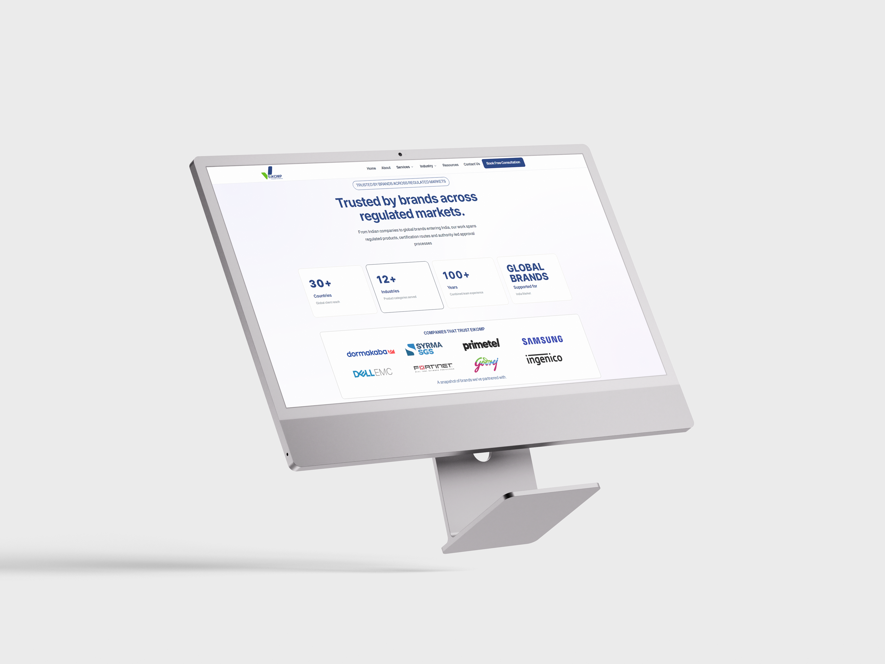
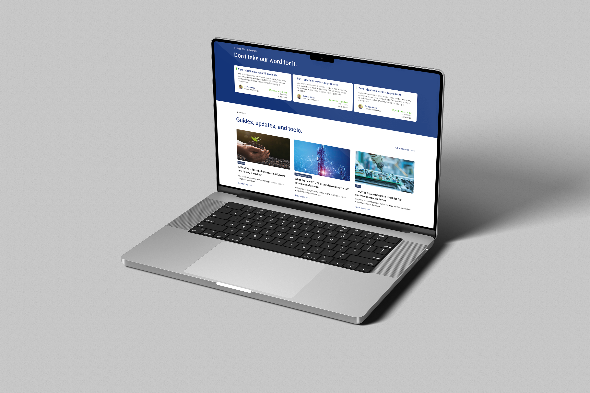

Signal Mapping
We separated certification routes, audience questions, and proof points to find the information visitors need before they are ready to speak.
Website Redesign / Case Study 01
Eikomp helps manufacturers navigate complex product-certification routes in India. The website needed to make that expertise feel immediate, credible, and easier to act on.
Read the process
The brief
Eikomp operates in a field shaped by technical standards, documentation, testing, and approval pathways. The design challenge was to communicate serious expertise without making the first interaction feel dense or bureaucratic.
The experience was reframed around what visitors need to decide: which route applies, why Eikomp is credible, and what action moves the process forward.

How it moved
Four connected decisions turned specialist knowledge into a usable, brand-led digital system.
We separated certification routes, audience questions, and proof points to find the information visitors need before they are ready to speak.
Services were organised as decision paths rather than a catalogue, helping manufacturers move from uncertainty toward the right regulatory route.
Deep navy signals authority, green marks progress, and a disciplined card and label system keeps technical material easy to scan.
Layouts were composed to preserve hierarchy across large monitors and laptops, keeping calls to action and credibility visible at every scale.


What had to be solved
Certification language had to remain accurate while the interface translated it into clear, progressive choices.
Indian manufacturers and global brands arrive with different questions, so navigation had to orient both without splitting the brand.
Experience, client logos, certification categories, and resources were structured as evidence instead of competing decoration.